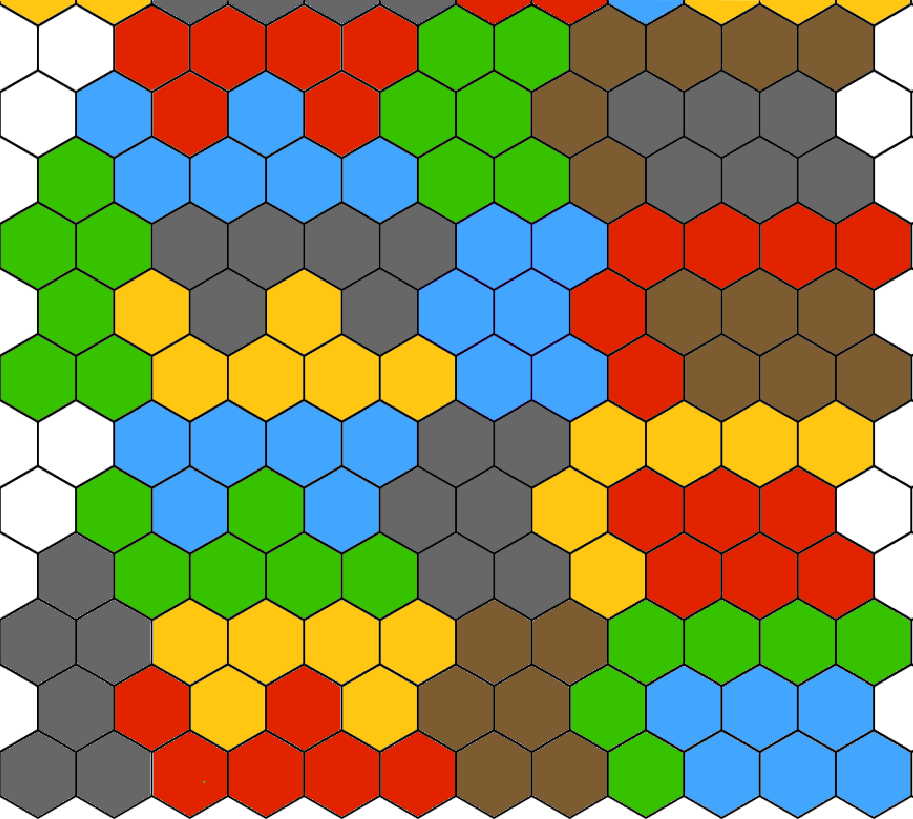
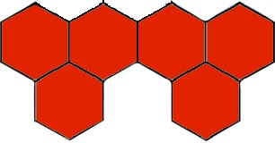
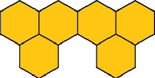
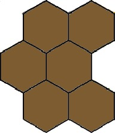
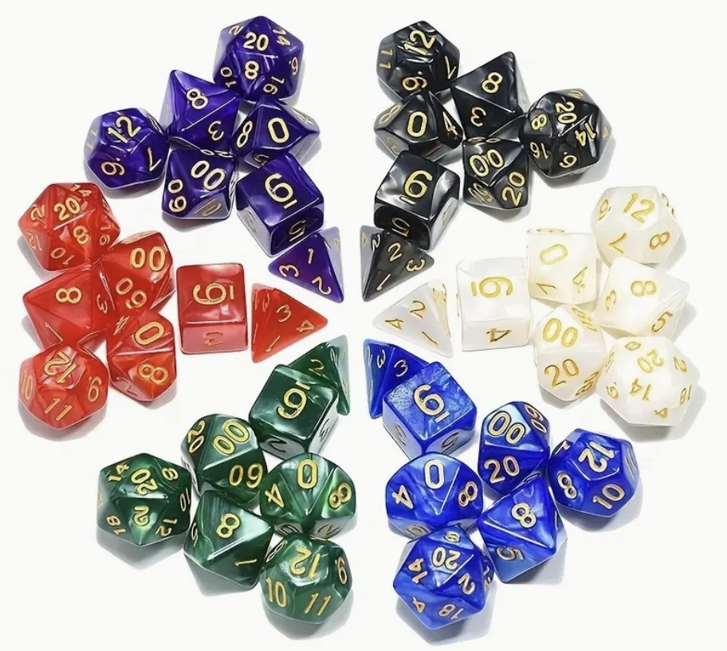
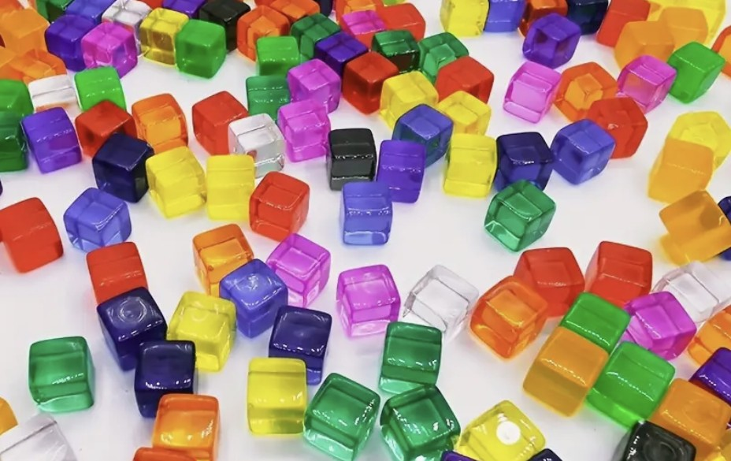

Five Elemental Clash
Title: Five Elemental Clash | Author: Susan Zhang
2-4 Players (PvPvPvP)
60-90 分钟
多人策略对抗桌游
Overview
Five Elemental Clash is a tactical tabletop game inspired by the Chinese Five Elements (Metal, Wood, Water, Fire, Earth) philosophy.
Players explore a modular hex map, battle bosses, gather resources, and compete to defeat other elemental avatars.
The game combines dice-based uncertainty with strategic resource management, creating a balance between luck and tactical planning.
Setting / Goal / Hook
- Setting: A mythical world based on the Chinese Five Elements. Players become elemental avatars exploring dangerous magical lands, battling bosses, gathering resources, and competing for supremacy.
- Goal: Defeat the opposing avatar(s). When either Willpower or HP reaches zero, the avatar dies.
- Play Value: Tactical depth through resource management, elemental interactions, and high-pressure boss decisions.
- Hook: Five-element synergy/countering + randomized maps + AP economy and dice checks make every match different.
Target Player / Pillars
- Board game players who prefer strategic depth and tactical decisions.
- Players who enjoy mythic themes, elemental fantasy, and role-playing flavor.
- Players who accept randomness (dice) plus planning (resources/routes).
- Players who enjoy high-risk, high-reward boss decision tension.
Core Design Pillars
- Elemental Strategy: Players must manage elemental attributes that influence combat effectiveness and terrain movement.
- Risk vs Reward: Boss battles and hazardous terrain create constant strategic decisions.
- Procedural Map: Terrain tiles are randomly generated each game, ensuring high replayability.
Key Systems
Action Point System
Players use Action Points derived from Willpower to perform actions such as movement, attacks, or skill usage.
Elemental Interaction
The Five Elements create a synergy and counter system that modifies combat damage and movement efficiency.
Dice-based Resolution
Combat, terrain challenges, and random events are resolved through multiple dice systems (D6, D10, D20, D100).
Design Challenge
Balancing randomness and strategy was a key challenge.
The system was designed so that dice influence outcomes, but player decisions—such as resource management and elemental specialization—remain the primary factor in success.
Revision History（First Iteration）
- 完成核心系统初版：移动、战斗、行动点、五行机制。
- 制作 Boss 卡（独立机制与决策压力）。
- 加入命运骰（幸运/厄运）与掷骰生成地图流程。
组件
Game Map

地形卡



Character Cards（Blank Character Card Example）
| Character Basic Info | |
|---|---|
| Character Name | |
| Gender | |
| Age | |
| Player Name | |
| Attribute | Value | Notes |
|---|---|---|
| Strength | ||
| Agility | ||
| 体质 | ||
| 意志 | ||
| Appearance | ||
| Luck |
| Stat | Base Value | Current Value | Calculation |
|---|---|---|---|
| 行动点 | 行动点 = 意志 / 10 | ||
| 生命值 | 生命值 = 体质 | ||
| Defense (Strength) | Defense Value = Strength / 2 | ||
| Dodge (Agility) | Dodge Value = Agility / 2 |
| Element Value | Value (Change each turn) |
|---|---|
| Metal | |
| Wood | |
| Water | |
| Fire | |
| Earth |
Boss 卡
| 暗影术士 | |
|---|---|
| 属性 | 详情 |
| 技能 1 | 精神控制 |
| 效果 | 当暗影术士生命值低于 50% 时，会尝试发动精神控制。玩家必须通过意志检定；若失败，则下回合会被强制行动并攻击队友。 |
| 描述 | 暗影术士能操纵敌人的心智，将其化为自己的傀儡。 |
| 诱因奖励 | 击败暗影术士可获得雷霆矿石，使远程攻击伤害 +5。玩家需要判断自己是否有足够意志抵抗精神控制，或选择追踪其行动轨迹。 |
1. 骰子

2. 标记物

行动点追踪表
| Attribute | Value | Notes |
|---|---|---|
| Strength | ||
| Agility | ||
| 体质 | ||
| 意志 | ||
| Appearance | ||
| Luck |
命运牌组
玩家在每回合开始时根据命运骰结果，从幸运/厄运牌组中抽牌。
| Card Name | Effect |
|---|---|
| Twist of Fate | The player skips their current turn and draws 1 Unlucky card and 1 Lucky card, both effects apply. |
| Endless Possibilities | The player draws 1 additional Lucky card from the pile and uses it for free. |
| Wheel of Destiny | The player rerolls their Fate dice, changing the outcome for this turn (can switch between Lucky and Unlucky cards). |
Item Cards
| Good Item Cards | Bad Item Cards |
|---|---|
| Attack Enhancement Gem | Cursed Potion |
| 行动点消耗：2 | 行动点消耗：1 |
| Effect: Increases attack power by 3 points for the next 2 turns. | 效果：力量 +2，但下一回合生命值 -4。 |
Game Setup
1) Board Creation
玩家轮流掷 D20 放置地形，结果对应如下：
| D20 结果 | 地形 | 描述 |
|---|---|---|
| 1-4 | 平原（金无关） | 基础地形，无额外障碍或增益，每步消耗 1 行动点。 |
| 5-8 | 森林（木） | 木属性高者更易通行，低者易受阻。 |
| 9-12 | 山地（土） | 土属性高者易攀爬，低者需额外行动点或检定失败。 |
| 13-15 | 熔岩区（火） | 火属性低者行动慢并承受火伤。 |
| 16-18 | 水域（水） | 水属性高者通过更快，低者可能受阻或受罚。 |
| 19-20 | 金属矿区（金） | 金属性高者更易采矿，低者可能塌方受伤。 |
- 战略点（稀有资源、Boss 点）在初次铺图后再掷 D20 分配。
- 地图生成后，玩家从边缘 Hex 选择起始位。
2) Character Creation
命运模式：掷 1D100 或 1D20×5，决定五项基础属性（力量/敏捷/体质/外貌/意志）与五项元素属性（金木水火土），结果为百分比，无单项上限。
点数分配模式：基础属性总计 250 点，元素总计 180 点；任一单项上限 80。
幸运值：角色创建时掷 3D16 决定幸运值，影响每回合命运骰结果。
初始道具：从正向道具堆随机抽 3 张作为初始装备。
行动点/生命值公式：行动点 = 意志 / 10；生命值 = 体质（每 10 点体质对应 10 点生命）。
流程
Turn Sequence
- Move：消耗行动点，成本依地形而变。
- Attack / Defend：与 Boss 或其他玩家交战。
- Skill / Item Use：使用技能或道具（通常有行动点成本）。
行动判定掷骰
- 战斗、困难地形移动、Boss 遭遇都需要骰子判定。
- D10/D20 主要用于：攻击判定、闪避判定、脱离判定。
Challenges and Hazards
- Earth < 30：登山需力量或敏捷检定，失败有行动点惩罚。
- Water < 30：过河需敏捷检定，否则被冲走并受 5 点伤害。
- Fire < 40：每回合受 10 点伤害，除非通过体质检定。
特殊流程（命运骰）
- 每回合开始掷 D100（或 D20×5）作为命运骰。
- 若结果 ≤ 幸运值：抽取幸运牌（正面效果）。
- 若结果 > 幸运值：抽取厄运牌（负面效果）。
- 大成功（1-3）：本回合行动点翻倍并自动抽取幸运牌。
- 大失败（98-100）：本回合行动点减半并自动抽取厄运牌，可能附加负面状态。
Endgame Procedures
当满足胜利条件时游戏结束：战斗胜利（一名玩家通过战斗淘汰其余全部玩家）。
System 1: Movement System
移动系统围绕“地形元素适配 + 行动点管理”展开。高元素值玩家可减少惩罚，低元素值玩家需要通过检定才能通行。
| 地形类型 | 属性阈值 | 行动点消耗 | 附加规则 |
|---|---|---|---|
| 平原 | 无 | 1 | 自由移动，无额外检定。 |
| 森林（木） | >60 | 1 | 自由通过森林。 |
| 森林（木） | 30-60 | 2 | 掷 D100，结果 ≤ 敏捷 才能移动。 |
| 森林（木） | <30 | 3 | 掷 D20 判木灵态度；失败停滞，大失败额外 -5 意志。 |
| 山地（土） | >60 | 2 | 自由攀爬通过。 |
| 山地（土） | 30-60 | 3 | 掷 D100，结果 ≤ 敏捷 才能移动。 |
| 山地（土） | <30 | 4 | 掷 D20 判土灵态度；大成功行动点翻倍，失败 -2 生命。 |
| 水域（水） | >60 | 2 | 自由通过水域。 |
| 水域（水） | 30-60 | 3 | 掷 D100，结果 ≤ 敏捷 才能过河。 |
| 水域（水） | <30 | 4 | 掷 D20 判水灵态度；成功回复 2 点生命，失败溺水 -3 点生命。 |
| 熔岩区（火） | >60 | 2 | 自由通过且免伤。 |
| 熔岩区（火） | 30-60 | 3 | 掷 D100，失败承受 3 点火伤。 |
| 熔岩区（火） | <30 | 4 | 掷 D20 判火灵态度；大成功 +5 攻击，失败受 5 点火伤。 |
| 金属矿区（金） | >60 | 1 | 可自由采矿。 |
| 金属矿区（金） | 30-60 | 2 | 掷 D100 采矿；失败使下次行动 +1 行动点。 |
| 金属矿区（金） | <30 | 3 | 掷 D20 判金灵态度；大成功得稀矿，失败塌方受 4 点伤害并中断行动。 |
- 移动成功可继续探索、采集、脱战；失败会造成行动点增加、生命值损失或本回合无法继续移动。
- 高属性（>60）通常降低成本，低属性（<30）常需 D20 检定并承担惩罚风险。
System 2: Combat System
- 玩家可执行基础攻击（近战/远程）或元素附魔攻击。
- 基础攻击：消耗 2 行动点（近战看力量，远程看敏捷）。
- 元素攻击：消耗 5 行动点，额外进行元素属性判定。
- 命中判定：掷 D20×5，与力量 / 敏捷 对照。
- 伤害计算：近战 = 力量/10；远程 = 敏捷/10；元素附伤 = 元素值/10。
- 元素联动：相生 +2 伤害；被克则 -2 伤害。
System 3: Elemental Interaction System
五行系统同时作用于战斗与移动：战斗中体现为相生增伤/相克减伤，移动中体现为地形通过成本与惩罚减免。
元素相生（+2）
- 金 >80，进行水属性攻击：+2
- 水 >80，进行木属性攻击：+2
- 木 >80，进行火属性攻击：+2
- 火 >80，进行土属性攻击：+2
- 土 >80，进行金属性攻击：+2
元素相克（-2）
- 金 >80，减免木属性来伤：-2
- 木 >80，减免土属性来伤：-2
- 土 >80，减免水属性来伤：-2
- 水 >80，减免火属性来伤：-2
- 火 >80，减免金属性来伤：-2
Design Analysis & Reflection
Design Inspiration – Why the Five Elements?
The core inspiration for this project came from the traditional Chinese philosophy of the Five Elements (Metal, Wood, Water, Fire, Earth).
Unlike many fantasy elemental systems that rely on simple oppositions (e.g., fire vs water), the Five Elements form a cyclical system of generation and countering. This structure provides a more complex and interesting strategic framework for gameplay.
In this design, the elemental system serves two main purposes:
Combat Strategy
Elemental attributes can enhance or counter attacks, encouraging players to consider their opponent’s elemental specialization before engaging in combat.
Environmental Interaction
Terrain types correspond to different elements. Players with higher elemental affinity can traverse related terrain more efficiently.
This allows the Five Element system to influence both combat and exploration, making it a central mechanic rather than a purely thematic layer.
Balancing Challenge – Randomness vs Strategy
A key design challenge in this project was balancing dice-based randomness with meaningful player decision-making.
Because the game includes multiple dice systems (D6, D10, D20, D100), there was a risk that outcomes could feel overly random. To mitigate this, the design introduces several stabilizing factors:
- Attribute thresholds that reduce randomness for specialized players
- Action Point management, which limits the number of actions per turn and forces strategic prioritization
- Elemental advantages, which provide predictable bonuses when players plan effectively
The goal was to ensure that dice introduce tension and unpredictability, while long-term success still depends on strategic decisions.
Playtesting Insights
Early playtests revealed several issues with pacing and player decision pressure.
Issue 1 – Movement felt too slow
In the initial design, difficult terrain required frequent dice checks and high AP costs. Players reported that this made exploration feel slow and sometimes frustrating.
Adjustment: Movement penalties were reduced for players with higher elemental attributes, allowing specialized characters to move more freely in certain terrains.
Issue 2 – Boss encounters were too risky
During early tests, players often avoided boss encounters entirely because the potential penalties outweighed the rewards.
Adjustment: Boss encounters were redesigned to include more attractive rewards (such as rare resources and equipment upgrades), creating a clearer risk–reward tradeoff.
Issue 3 – Attribute distribution imbalance
Random character generation sometimes produced extremely unbalanced characters. Some players began the game with very high combat stats, while others were significantly weaker.
Adjustment: A Point-Buy Mode was introduced as an alternative to random character generation, allowing players to build more balanced characters.
Iteration & Improvements
Based on playtesting feedback, several iterations were implemented to improve game flow and strategic depth.
Key improvements included:
- Adding multiple character creation modes (Random vs Point-Buy)
- Adjusting terrain AP costs to reduce pacing issues
- Improving boss rewards to encourage player engagement
- Refining the elemental interaction system to make advantages more meaningful
These changes helped create a more balanced experience where players could experiment with different elemental strategies while maintaining meaningful decision-making throughout the game.